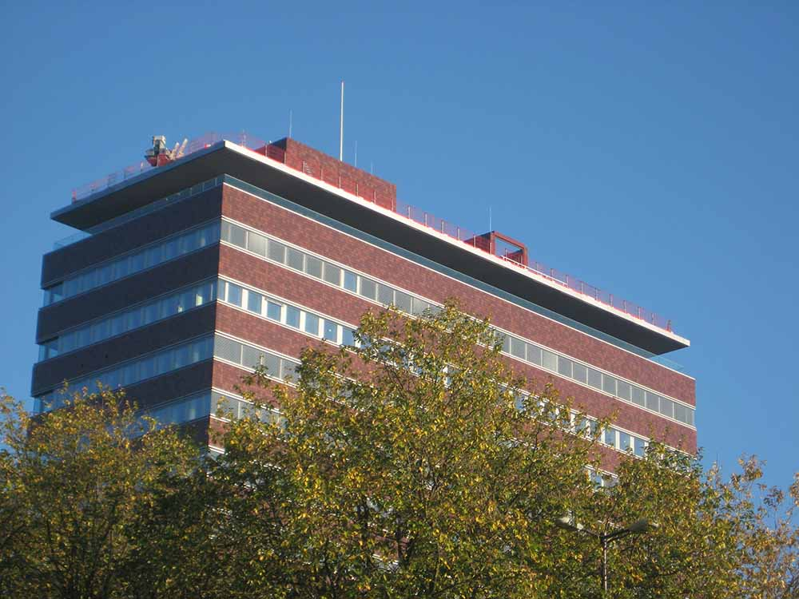
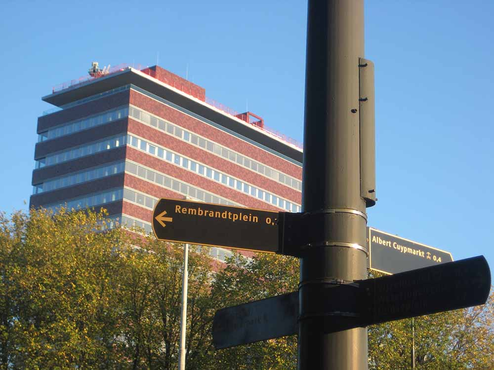
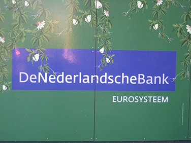

Van Kantoor Naar Gemeenschap
Het Initiatief
Het hoofdkantoor van de Nederlandsche Bank zit al sinds 1968 op het Frederiksplein in Amsterdam. Na ruim 50 jaar was het hoog tijd voor een verbouwing. DNB gebruikt deze kans om van het gebouw meer te maken dan alleen een kantoor. Ze willen het enorm gaan verduurzamen en er ondertussen een gebouw van maken waar de inwoners van Amsterdam hun eigen gemeenschap kunnen vormen.
Het Bedrijf
De Nederlandsche Bank is opgericht in 1814. Ze maken zich sterk voor de financiële stabiliteit in Nederland en zorgen voor een duurzame welvaart.
